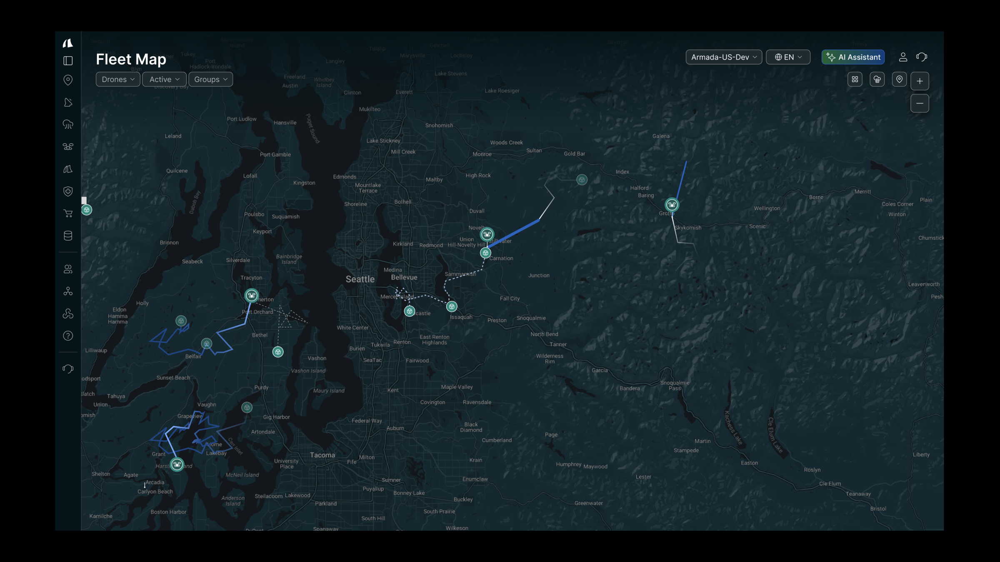
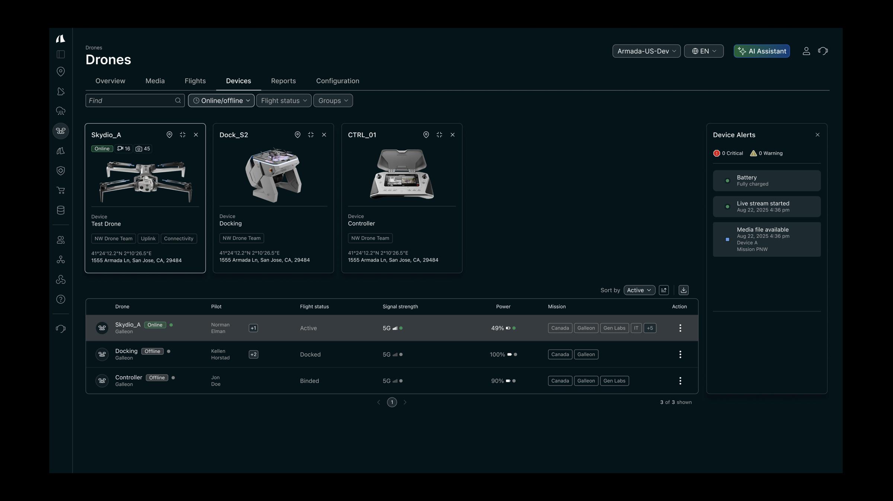
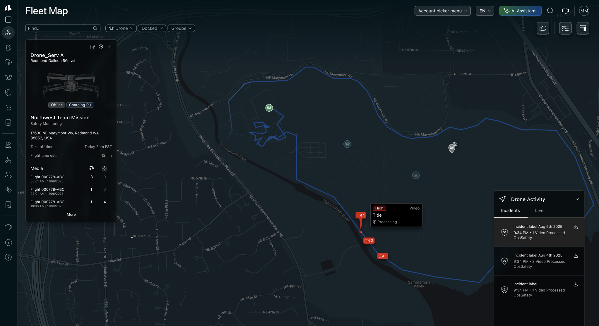
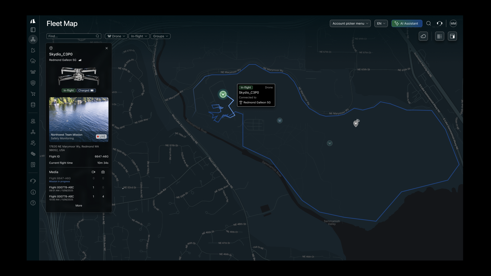

Armada · Atlas
A fleet map that treats a drone like an operation, not a pin.
Atlas V2 is the drone cut of Armada’s operational picture: inventory you can scan, every active path on a Google map, and a live feed that does not just play — it writes the incident while AI reads the frame.

A patrol that does not need a person on the roof.
Facilities use drones where a ground patrol is slow or unsafe: flare stacks, rooftops, confined yards, a perimeter after a storm. The aerial view and a thermal sensor see heat, leaks, and a breach a fixed camera misses. The flight is already scheduled. Atlas is the surface that flight reports to.
Hazardous ground
Inspect the structure without putting someone on it.
A site in minutes
Cover the perimeter before a ground team can start the loop.
Heat the eye misses
Thermal finds overheating, insulation failure, and fluid the daylight lens will not.
An alert has to clear a threshold.
Animals and blowing debris are not incidents. Before the path changes, the system classifies what it saw. Five checks decide whether the map should care.
Type
A person, a vehicle, heat on a transformer, a broken fence line.
Zone
Perimeter is not the data hall. A critical zone escalates faster.
Time
Scheduled maintenance, or 2 a.m. in a sterile zone.
Proximity
How close it is to the asset, and how fast it is closing.
Persistence
A pool forming in place, or someone walking the yard.
Then the path changes.
A cleared incident interrupts the patrol. The drone leaves the waypoint, the map flashes, and the live feed is the same object as the point on the line. AI watches that frame, clips the scenario, and writes a diagnostic back onto the path — not into a log someone opens later.
-
01
Steer
Leave the scheduled loop. Fly to the coordinate and hold a standoff.
-
02
Look
Point the gimbal. Switch to thermal when daylight is not enough.
-
03
Alert
Flash the asset on the map and open the live stream for the people on the ground.
-
04
File
AI records the clip and returns a diagnostic on that point of the path.
If the incident is not on the path, it is not in the operation.
What I owned
- The drone module as Atlas — inventory, map, and live view in one chrome.
- Google Maps as the fleet ground, so every active path and selected airframe share one coordinate system.
- Live video on that map, with AI that records the scenario the moment it clears the threshold.
01
The hangar
Airframe, dock, and controller before anyone opens a feed. You pick a bird because the row said it is ready.

02
The Google ground
Fleet Map is the Google Maps API under a night skin. Many paths, one selected drone, incidents sitting on the line.

03
The frame that files
Live view stays in the panel. The path does not leave. That frame is what the model reads, and what it writes back.
